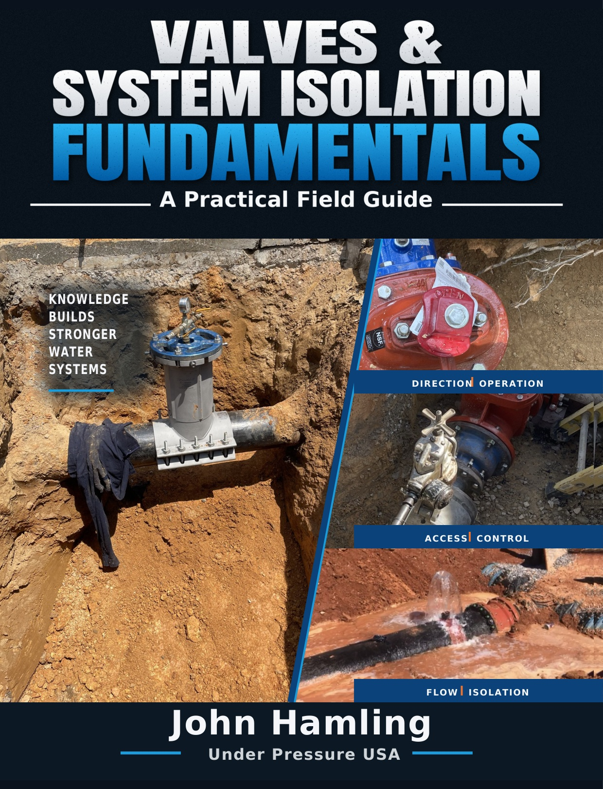
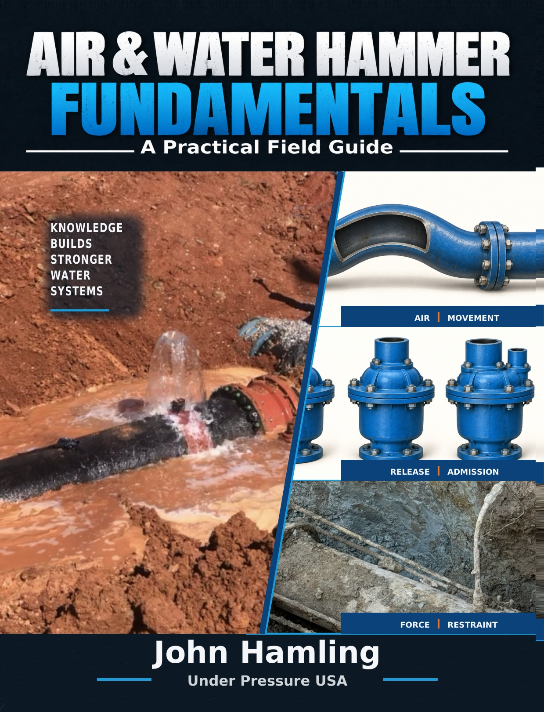
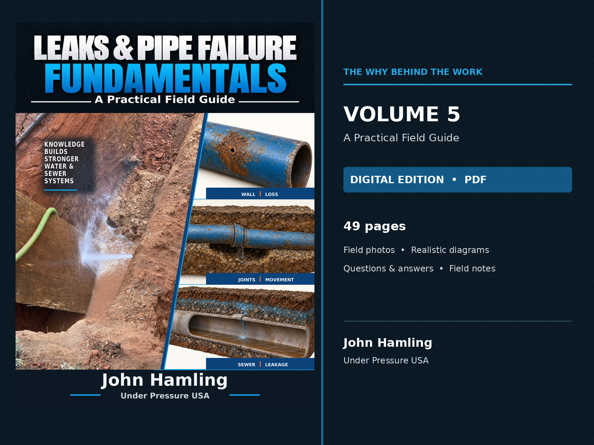

Volume 1
Understand pressure, elevation, and flow.
Real crews. Real infrastructure. Real stories.
Explore the engineering, history and people behind the water systems we depend on every day.
Knowledge Center
Eight ways to explore the infrastructure we rely on every day.
 Pipes & Materials →
Pipes & Materials → Valves & Fittings →Pumps & Pressure →
Valves & Fittings →Pumps & Pressure → Water Systems →Sewer Systems →History & Evolution →
Water Systems →Sewer Systems →History & Evolution → Field Operations →Infrastructure Failures →
Field Operations →Infrastructure Failures →Under Pressure Underground
Explore the history, engineering and materials of underground infrastructure.
Documentary series
Explore the episodes, from pipe materials to the systems that keep communities running.
Explore the playlist on YouTube →The Why Behind the Work · Field Guide Series

All eight downloadable PDF field guides in one collection.
$44.99 · Save $18.93 compared with buying individually.
Shop Complete Collection
Volume 1
Understand pressure, elevation, and flow.

Volume 2
Understand pipe dimensions, fit, and support.

Volume 3
Understand valves, isolation, and continuing flow.

Volume 4
Understand trapped air, pressure changes, and water hammer.

Volume 5
Understand why pipes leak, deteriorate, and fail.

Volume 6
Understand gravity flow and sewer system fundamentals.

Volume 7
Understand pumps and how they move water.

Volume 8
Understand the systems that deliver water.
Eight practical field guides covering water pressure, pipes and fittings, valves, water hammer, pipe failures, gravity sewers, pumps, and water distribution. Each volume explains the why behind what happens in the field.
Individual digital guides and four-guide bundles are also available. Paperback editions are available separately for selected volumes.
In the Field
Every image comes from actual field work — the dirt, the equipment, the crews, and the systems that keep water moving.

The Why Behind the Work
Practical training that explains the reasoning behind the work.
Training Series
Learn the reason behind the procedures, decisions, and habits that separate simply doing the work from understanding it.
Watch the Training Playlist →Beneath every city is a story
Under Pressure USA began as a way to show the world the niche business of hot taps, line stops, and valve inserts. It has grown into something bigger: telling the story of underground infrastructure, the history behind it, and the crews who keep it operating.
Under Pressure USA Industry Hub
Connect with manufacturers and explore professional resources for the municipal water and wastewater industry. Built for the people who keep our infrastructure running.
Explore the Industry HubUnder Pressure Kids
Join Drip, Bolt, Piper, Max and Mia in Riverton and discover the amazing world of water, pipes and the people who keep our communities flowing.
Explore Under Pressure Kids
What we do
Educational documentaries about the history, materials, failures, and evolution of underground infrastructure.
Training focused on why the work is done the way it is — the reasoning, decisions, and field knowledge behind the procedure.
Conversations with the people behind the work — real stories, shop talk, and the crew side of the industry.
Real jobsite footage showing hot taps, line stops, valve inserts, equipment, and the scale of the work.

Meet John
Under Pressure USA started as a way to show people the niche work involved in hot taps, line stops, and valve inserts. Over time, it turned into a larger mission: telling the story of the infrastructure beneath every city.
Through documentary-style videos, field footage, and real-world experience, Under Pressure USA gives viewers a look into a world they rarely get to see.
More Than Underground
Under Pressure USA explores the hidden world beneath our feet. It’s John Hamling follows the everyday moments above ground — one simple question at a time: What do I get to do today?
Truck washes, mowing, coffee, lunch, errands, and the small routines that make up a real day.
Short, honest videos built around ordinary moments rather than staged scenes or forced lessons.
Find John Hamling on Facebook, Instagram, TikTok, and Threads as @ItsJohnHamling.
Gear I Actually Use
Jobsite essentials, truck gear, filming equipment, and other products I use, have bought for my crews, or genuinely recommend.
As an Amazon Associate I earn from qualifying purchases.
Browse the gear in one place, including the products featured in upcoming blue-collar gift guides.
View My Amazon Picks →Follow the journey
Watch the documentaries, follow the field stories, and connect with Under Pressure USA across social media.
Listen & Watch
Under Pressure USA brings the hidden world beneath our feet to life through documentaries, field stories, and conversations from the people who build and maintain our infrastructure.